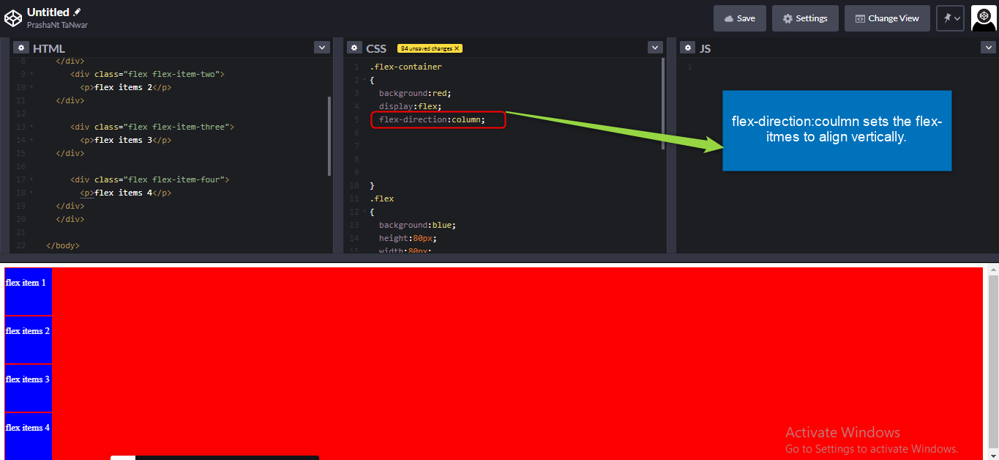
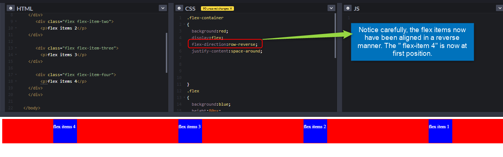
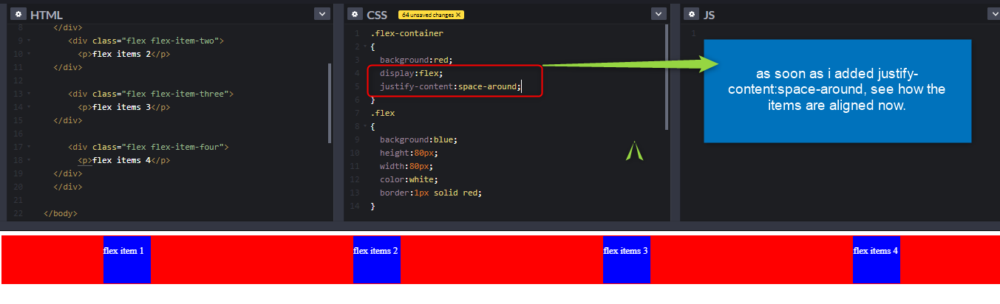
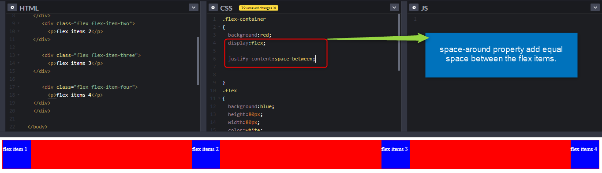

Flexbox : flexbox in CSS is used to make layouts. Effectively and easily. Before flexbox, developers would use floats and before floats, tables were used to build layouts.
Now what is flex-direction !, you might be wondering. We will get to it soon. This flexbox vocab was just to warm up you. Let us dive into flexbox now.
Note : In flexbox, we have properties using which we can align items and build beautiful layouts. Some of those properties are used on flex container and some are used on flex items.
Properties for flex container
display this property is used to set the display of our flex-items. Now you must be thinking that why don’t we apply it on flex items itself. No that’s not how flexbox works.To make the flex items align, we set the parent to display: flex. As soon as you apply this property, the child items i.e flex items will be aligned horizontally ( in a row) because that’s the default value.
See carefully the images, as soon as we apply display:flex, see the changes that happen to the flex items.
Flex-direction - this property is used to set the direction of flex items that are inside the flex container. The default value is row, but we can change it as per the layout we desire.
Row is the value by default
flex-direction:coulmn sets the items to align vertically.
flex-direction:row-reverse, aligns the items (that are aligned horizontally) in a reverse order
flex-direction:column-reverse, aligns the items (that are aligned vertically) in a reverse order
Exercise : Try it by yourslves.
justify-content : it layouts the flex items according to the value set. Justify-content: flex-start (default-value)
here we will talk about space-around and space-around properties. Rest properties, you may try as a exercise.
space-around property sets a equal amount of space ON BOTH SIDES the flex-items.
space-between property sets an equal amount of space between flex items.
